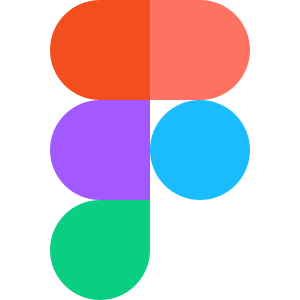
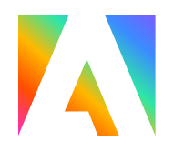

Administrative Assistant · Broward College
Coconut Creek. Event and class flyers, faculty scheduling, and student inquiries treated as a UX problem — not a ticket pile.
Open to internships and roles
ResumeI’m Kiff Simon. I live in Pompano Beach and work around Fort Lauderdale. I’m a Computer Engineering student at Broward College — finishing an Associate of Arts in Computer Science (2023–2026). The Google UX Certificate is where I learned to sit with a messy product and make the next step obvious. That still matters. It just isn’t the whole identity.
The work now is design plus build. Sprinkler Repair System is a live site I designed and shipped for a South Florida client. Hackathons are where I do that in a room: Communify (1st, Crossingz), Neo Sapiens (2nd, Miami Hack Week). Days on the Coconut Creek campus I still treat flyers, scheduling, and student inquiries as product problems, not a ticket pile.
I speak English, Spanish, French, and Creole. When I’m not in Figma or a repo I take photographs. I ship with AI in the loop without pretending the tool is the craft.
That’s the loop. Talk to the people who will live in the product. Cut until an expert can still find the decision. Present it — or ship it. Figma and Google AI Studio are how I move fast on the design side. HTML, CSS, Python, and GitHub are how I make it real when that’s the honest next step.

Figma
Adobe Express Python
Python
A short video on shipping with Figma and Google AI Studio. The model changes. The job does not: the problem, and the person who has to live with what you built.
Coconut Creek. Event and class flyers, faculty scheduling, and student inquiries treated as a UX problem — not a ticket pile.
Designed and built the live site for a South Florida irrigation company. Problem-first pages, click-to-call, and a form that goes to Ben — not a brochure.
Redesigned the fluency platform with educators and developers. I owned UX: wireframes, prototype, and a specialist view so SLPs and reading teachers can see if practice actually happened. Backdrop Build v3 finalist.
First prize at the Crossingz AI Networking Hackathon for Communify. Second at Miami Hack Week for Neo Sapiens — Refresh Miami named it the runner-up.
Ran sessions and taught the game. Same job as product work, in a different room: watch people, make the next step obvious, help them get there.
Google UX Certificate alongside the degree. Computer Engineering student — the interface is still the part I care about most, and the stack is how it ships.
The seven Google UX courses are one certificate, not seven. Design training plus AI, data, and Figma — kept to what a hiring manager can actually use.
The full specialization: foundations, empathize and define, wireframes, research and testing, high-fidelity Figma, dynamic UI, and a social-good project.
Four Google credentials from this summer. How I already work: the tool is secondary, the problem is not.
How data is collected, cleaned, and read — useful next to specialist dashboards and progress tracking.
Master Digital Product Design. UI UX Design Patterns. UX/UI Design Principles Compact.
The file is still where the work happens.
Journey mapping, usability testing, sketching, lo-fi to hi-fi in Figma, working with developers, using AI in the UX process, and design thinking. The rest of the catalog is on LinkedIn.